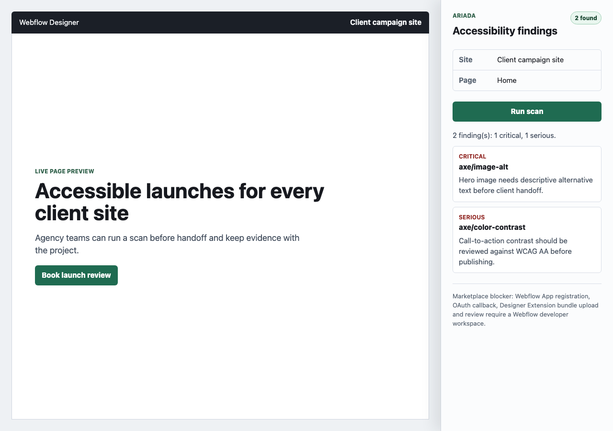

S11 Webflow app evidence report
What is Webflow?
Webflow is a visual website builder and CMS used by site owners, designers and agencies to design, publish and maintain marketing sites, landing pages and CMS-backed pages without treating every change as a traditional application deployment. The core work surface is the Webflow Designer: a browser-based canvas where teams edit page structure, styling, content bindings and publishing state. Webflow Apps can extend that workflow through Designer Extensions, which appear inside the Designer, and Data Client capabilities, which connect the site or workspace to external services through OAuth and Webflow APIs.
Channel Description
S11 is the Ariada Webflow app channel: a Designer Extension and Data Client style adapter for agencies and site builders who need Ariada scan findings while a Webflow page is still in the Designer handoff workflow. This local build does not register a real Webflow app; it proves the request shape, panel rendering, hosted-scan contract and evidence output with a local Designer-panel fixture.
Why this is a separate Ariada channel
Webflow needs its own Ariada channel because the buyer and workflow are not the same as a developer CLI, browser extension or CMS plugin. Webflow users often work inside a hosted Designer canvas, publish through Webflow hosting and expect marketplace installation instead of package-manager setup. The adapter therefore has to package Ariada as a Designer-panel and OAuth-hosted scan workflow: the scan still belongs to Ariada hosted scan/CLI semantics, but the distribution, evidence framing and blocker model belong to Webflow.
Who pays / what value they buy
| Role | What they need | What value they buy | Payer fit |
|---|---|---|---|
| Webflow site owner | A clear answer before publishing: is this site likely to fail an accessibility review? | Lower launch risk, client-ready evidence and a first remediation list without commissioning a full manual audit first. | Direct marketplace buyer for single-site subscriptions or per-scan evidence packs. |
| Webflow agency/designer | A Designer-native panel that finds issues before client handoff and avoids forcing every designer into CLI tooling. | Faster QA loops, reusable handoff artifacts and a differentiator for accessibility-aware client delivery. | Strong agency-plan buyer; can resell evidence as part of launch QA. |
| compliance owner | Repeatable evidence tied to a rendered page, with raw JSON, screenshot, command log and blocker status. | Audit trail for WCAG/EAA review, procurement support and a way to compare release risk across sites. | Economic buyer in regulated or public-sector contexts. |
| release/platform owner | A hosted scan contract that can later be standardized across many Webflow sites and release workflows. | Consistent policy gates, retained artifacts and integration with broader Ariada domains after accessibility. | Platform/team budget buyer once multiple sites or agencies need the same gate. |
Why this channel matters commercially
Webflow concentrates designers and agencies who ship client marketing sites, landing pages and CMS-backed pages. That makes it a useful distribution channel for Ariada because accessibility evidence can be sold as a handoff and publishing risk reducer rather than as another scanner destination.
Channel User Preferences
| Preference | S11 implication |
|---|---|
| Designer-native workflow | Panel must summarize findings without forcing a terminal workflow. |
| Low setup friction | OAuth install and hosted API must do the heavy lifting after marketplace approval. |
| Client-ready artifacts | Reports need screenshot, raw JSON and concise remediation text. |
| No scanner maintenance | Adapter delegates to Ariada hosted scan/CLI semantics and does not implement WCAG rules. |
Competitors And Narrow Evidence Competitors
| Category | Examples | Ariada wedge |
|---|---|---|
| Webflow app ecosystem | Native Webflow Apps, Designer Extensions and CMS Data Clients. | Ariada adds compliance evidence in the same publishing workflow. |
| Accessibility overlays/widgets | Generic site widgets and quick-check tools. | Ariada emphasizes evidence artifacts and scanner output, not visual-only overlays. |
| Enterprise accessibility platforms | Deque, Siteimprove, Level Access, AudioEye, Evinced-style scanners. | Ariada starts with a thin marketplace adapter for agency workflows and can escalate to hosted evidence retention. |
| Browser/CI scanners | axe, Lighthouse, Pa11y, Accessibility Insights. | Ariada packages the hosted result for Webflow users who do not live in CI. |
Implemented vs not implemented
| Item | Status | Evidence |
|---|---|---|
| Adapter helpers | implemented | src/index.mjs builds OAuth URLs, hosted scan requests, normalized finding rows and panel view models. |
| Designer-panel fixture | implemented | fixture/index.html renders a Webflow-like panel and calls a local hosted-API fixture. |
| Hosted API scanner | blocked | Real SaaS endpoint is required; local fixture returns Ariada-shaped findings only. |
| Webflow app registration | blocked | Requires Webflow developer workspace, app registration, OAuth callback and app credentials. |
| Marketplace submission | blocked | Requires bundle upload, app review materials, demo account and founder submission. |
Domains Roadmap
| Domain | Now | Roadmap |
|---|---|---|
| Accessibility | Primary request domain in this adapter. | Keep as first marketplace value proposition for WCAG/EAA review. |
| Privacy | Not implemented. | Add cookie and tracker evidence once hosted scan exposes privacy findings. |
| Security | Not implemented. | Add CSP/header/mixed-content checks for published Webflow domains. |
| SEO and AI readiness | Not implemented. | Useful for Webflow marketing sites after the core scan flow is live. |
| Brand/design-token checks | Not implemented. | Agency upsell after visual capture and token-source mapping exist. |
Technical Connectors
| Connector | State |
|---|---|
| Webflow OAuth | Helper builds authorization URLs; token exchange is host-side and blocked without app credentials. |
| Designer Extension | Local iframe-style fixture proves panel UI; real Webflow bundle upload is blocked by workspace access. |
| Data Client | Request context includes site/page identifiers for host API correlation. |
| Ariada hosted scan API | Adapter produces a hosted scan request and normalizes returned findings; fixture does not scan DOM itself. |
E2E Test Adequacy
The local fixture flow starts a real HTTP server, fetches Webflow page context, posts a hosted-scan-shaped request, receives Ariada-shaped findings and renders those findings in the browser panel. It is adequate for adapter contract and panel evidence. It is not adequate for marketplace, OAuth token exchange, Webflow iframe permissions or real production scanning.
Raw JSON And Logs
Raw fixture JSONFixture command logFixture exit codeTest report
fixture: http://127.0.0.1:62677 context status: 200 scan status: 200 source: webflow.designer-extension url: https://client.example.test/ findings: 2
Embedded Screenshot

Blockers
| Blocker | Owner | Next action |
|---|---|---|
| Webflow developer workspace and app registration | Founder or channel owner | Register app with Designer Extension and Data Client capabilities. |
| OAuth credentials and HTTPS callback | Hosted Ariada owner | Provision callback URL, secrets storage and token exchange endpoint. |
| Designer Extension bundle upload | Founder or channel owner | Build and upload bundle through Webflow app version manager. |
| Marketplace review | Founder | Prepare submission form, demo account, reviewer access and demo video. |
Distribution And Monetization Next Steps
Package the Webflow app as a marketplace-first agency offer: free panel scan preview, paid hosted evidence retention, client-ready exports, multi-site agency dashboard and additional domains for privacy, security, SEO and AI readiness. The first monetizable surface should be agency client handoff evidence, not a standalone scanner clone.
Sources
- Webflow Developers, Register an App, accessed 2026-07-01, primary/high: developers.webflow.com/data/docs/register-an-app.
- Webflow Developers, Designer API introduction, accessed 2026-07-01, primary/high: developers.webflow.com/designer/reference/introduction.
- Webflow Developers, Submitting Your App to the Webflow Marketplace, accessed 2026-07-01, primary/high: developers.webflow.com/data/v2.0.0-beta/docs/marketplace/submitting-your-app.
- Webflow Developers, OAuth, accessed 2026-07-01, primary/high: developers.webflow.com/data/reference/oauth-app.